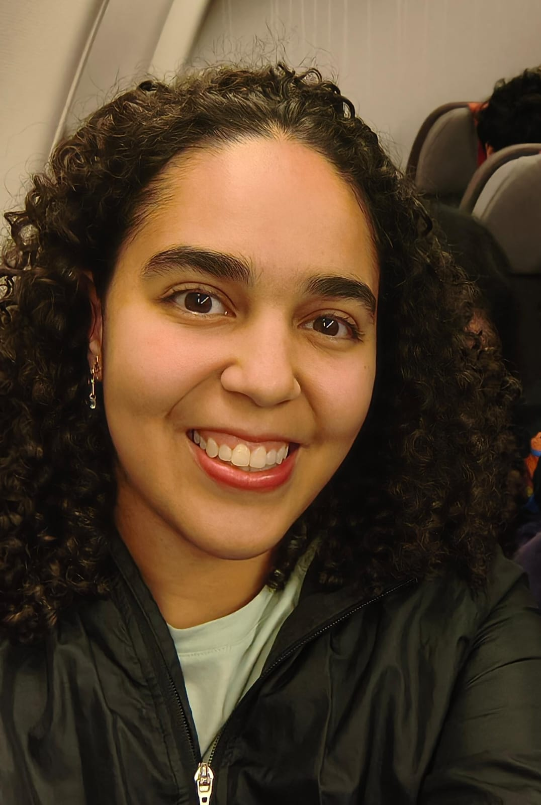

Research interests
Cosmology, dark matter phenomenology, reionization history.
Recent work
Latest publications
Up to five papers with Fernanda Lima Matos among the first five authors, ordered by first release date. Preprints are labelled separately from journal publications.
Papers checked .
The search is still being verified. This list may be incomplete.
Spectroscopic characterization of different protonation/deprotonation states of Barbaloin in aqueous solution
Spectrochimica Acta Part A: Molecular and Biomolecular Spectroscopy 286, 122020 (2023)
How these papers are selected
We check named authors in the order given by the source. Positions 1–5 qualify, including alphabetical author lists. Each paper is counted once across its preprint and journal versions. Dates refer to the first public release, usually arXiv v1, rather than a later revision or journal issue. Lists are reviewed monthly; source coverage and identity checks can leave fewer than five verified papers.